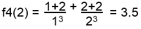

Descripción:
- Desarrollarán los algoritmos y
programas de algunos problemas que implican el uso del ciclo while.

Objetivos:
- Aplicar el ciclo while en la
solución de problemas.
- Utilizar funciones acompañadas
de la estructura "while".
- Desarrollar la habilidad de
hacer frente a los inconvenientes del uso de estructuras cíclicas,
es decir, en caso de que una función se cicle, deberás ser capaz de
identificar el elemento que provoca este mal funcionamiento.
- Ejercitar la habilidad de
hacer frente a los mensajes de error que envía la herramienta de
desarrollo.

Modalidad y
forma de trabajo:
- De manera
individual, desarrolla el algoritmo
y posteriormente el programa completo en Python para cada
uno de los ejercicios que se presentan a continuación.
- Entrega vía Canvas, los
archivos *.py que contengan los programas en Python. Es
importante que al inicio de cada programa coloques el o los
algoritmos que utilizaste.

Instrucciones:
Construye
un programa completo en Python libre de errores, que incluya las
siguientes funciones:
- La
función f1 que recibe un valor
entero mayor o igual a uno y regresa el resultado de la siguiente
sumatoria:

.
Por ejemplo:
f1(2) = ( 2(1) - 1 ) +
( 2(2) - 1 ) = 4
f1(3) = ( 2(1)
- 1 ) + ( 2(2) - 1 ) + ( 2(3) - 1 ) = 9
- La
función f2 que recibe un valor
entero mayor o igual a uno y regresa el resultado de la siguiente
serie:
f2(N) = 40 - 41 + 42 - 43
....
Por ejemplo:
f2(2) = 40 - 41 = -1
f2(3) = 40 - 41 + 42
= 41
- La
función f3 que recibe un valor
entero mayor o igual a uno y regresa el resultado de la siguiente
serie:
f3(N) = 3 *
6 * 9 *...* 3N
Por ejemplo:
f3(2) = 3(1) * 3(2)
= 18
f3(3) = 3(1)
* 3(2) * 3(3) = 162
- La
función f4 que recibe un valor
entero mayor o igual a uno y regresa el resultado de la siguiente
sumatoria:
.
Por ejemplo:

- La
función multiplicacion
que recibe dos números enteros positivos num1 y num2
y calcula la multiplicación de num1 por num2 utilizando el ciclo
while y la operación suma.
Por ejemplo:
- La
función division
que recibe dos números enteros positivos num1 y num2
y calcula la división entera de num1 entre num2 utilizando el ciclo
while y la operación resta.
Por ejemplo:
num1 num2
5 - 3 = 2
2
¿Cuántas restas se hicieron hasta que num1 fue menor
que num2?
1
- La
función menu,
que despliegue el siguiente menú en pantalla:
Series
y sumatorias:
A. f1
B. f2
C. f3
D. f4
E.
Multiplicacion
F.
Division
S. Salir
Pulse la opción deseada:
- En
la sección del "script
principal"
construya un programa completo en Python que utilice la función menu para desplegar el menú correspondiente y de acuerdo
a la opción seleccionada por el usuario le dé la oportunidad de
ejecutar cualquiera de las funciones que han sido construidas.
Debes utilizar el ciclo while para que se cicle el programa hasta
que el usuario introduzca una opción inválida.
while True:
menu()
opcion =
int(input("Introduce una opcion: "))
if
opcion == 'A' or opcion == 'a':
elif
opcion == 'B' or opcion == 'b'
elif
opcion == 'C' or opcion == 'c'
else:
print("Opción inválida")
break
- Recuerde que la captura
de datos y validación de valores debe ser realizada en la sección
del "script principal", pues las funciones NO pueden realizar las
tareas de validación o captura de datos.
- Guardar este archivo con
el nombre: P_Matricula.py

Recursos:
Funciones: 6.
Funciones
Ciclo while: 7.
While

Forma de
entrega:
- Envía tus archivos por
Canvas, no se aceptarán
tareas por ningún otro medio.
-
Envía solo tus archivos *.py.
-
Los archivos enviados posteriormente a la fecha límite
no serán calificados.
.
Instrucciones para enviar tu tarea por Canvas
- Haz clic en el
botón de Tareas.
- Haz clic en la actividad
de EntregaTareaWhile.
- Haz clic en el botón de
Entregar tarea.
- En el fólder de
Carga del archivo, haz clic en el botón de
Examinar y localiza el archivo *.py. Si necesitas agregar
más archivos, haz clic en + Agregue otro archivo,
haz clic en el botón de Examinar y localiza el
otro archivo *.py.
- Cuando hayas terminado
de subir tus archivos, haz clic en el botón de Entregar
tarea y listo!!!
|